- Kommer du fra MacDiveHvilken fil du skal eksportere, og hvordan du flytter uten å miste noe.
- Last ned fra en computerShearwater og andre Bluetooth-computere, eller en kabel på Macen.
- Garmin DescentImporter .fit-filer fra klokken eller Garmin Connect.
Er det noe som ikke virker? Se Feilsøking. Thermocline er en loggbok: den viser hva dykkecomputeren din registrerte, og beregner aldri dekompresjon.
Skaff appen
Thermocline er bare for Apple-enheter: iPhone, iPad, Mac og Apple Watch. Under betaen installeres den via Apples TestFlight-app.
| Oppgave | iPhone og iPad | Mac |
|---|---|---|
| Bli med i betaen | Bli med i betaen: én lenke for iPhone, iPad, Mac og Apple Watch. Åpne den på hver enhet og installer fra TestFlight. Apple Watch-appen følger med iPhone-appen. Alle enhetene deler den samme loggboken via iCloud. | |
| Ble med i iPhone-betaen før 18. november 2026 | Den appen har flyttet. Se flytte fra den gamle iPhone-appen. | |
| Hold deg oppdatert | Når TestFlight tilbyr et nytt bygg, oppdaterer du alle enhetene du bruker. Et eldre bygg slutter å sende endringer til det er oppdatert, og sier fra om det. Ingenting går tapt. | |
Første oppstart og omvisningen
Ved første oppstart blir du spurt om navnet ditt, enhetene dine og hvor dykkene dine kommer fra. Enheter lagres metrisk; å endre dem endrer bare visningen.
| Oppgave | iPhone og iPad | Mac |
|---|---|---|
| Innstillinger | Fanen Profil | Thermocline → Innstillinger |
| Omvisningen | Profil → Hjelp → Vis omvisningen | Hjelp → Ta omvisningen |
Omvisningen går gjennom alle skjermene med en eksempelloggbok, ikke din.
Skjermbildene på denne siden viser eksempelloggboken fra omvisningen: dykkene og dykkestedene er oppdiktet. Trykk på et bilde for å se det i full størrelse.

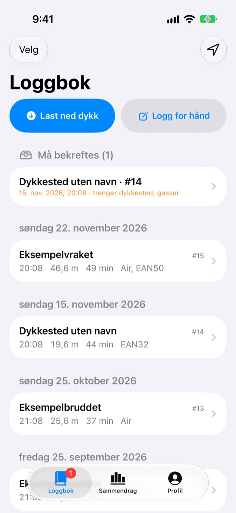
Ta med loggboken
Thermocline leser MacDive (mappen, XML eller UDDF), en Shearwater Cloud-database, Garmin .fit-filer, UDDF fra hvilken som helst loggbok, og CSV. Du velger hvilke dykk som skal legges til, og alt den ikke kan lese, blir listet opp, aldri forkastet i det stille.
| Oppgave | iPhone og iPad | Mac |
|---|---|---|
| Importer en fil | Profil → Dataene dine → Importer en loggbokfil, og velg den fra iCloud Drive eller Filer. | Importkommandoen i Fil-menyen (⇧⌘I). |
| Garmin .fit-filer | Velg flere samtidig. | Velg flere, eller en hel mappe. |
| MacDives mappe, med bilder | Bare på Mac. Ta med bildene senere med Mac-appen. | Fil → Importer fra MacDive… og velg MacDives mappe: dykk, dykkebilder og bilder av kort. MacDives filer endres ikke. |
| Velg dykkene | Fjern haken for dem du ikke vil ha, og velg Importer. | |
| Angre en import | Gjenopprettingspunktet Før en import, som lagres før enhver import av mer enn ett dykk. | Angre import… i importrapporten, eller det samme gjenopprettingspunktet. |
Når importen er ferdig, viser en rapport hvor mange dykk som ble lagt til, hvilke elementer som ikke ble importert og hvorfor, og alt du bør sjekke. Dykk der filen ikke hadde noen gass, venter under Må bekreftes.
Hvilken MacDive-fil du skal bruke
MacDive kan gi deg XML-filen, UDDF-filen eller (på Macen) hele mappen. De inneholder ikke det samme:
| Hva den inneholder | MacDive XML | MacDive UDDF | MacDive-mappe (Mac) |
|---|---|---|---|
| Dykk, dykkesteder, makkere, gasser | Ja | Ja | Ja |
| Flaskestørrelser | Ja | Nei: størrelsene er ikke vannvolum, så de står tomme | Ja |
| Dybdeprofiler | Alle dykk | Alle dykk | Alle unntatt dykk MacDive lastet ned på iPhone eller iPad, som den lagrer kryptert |
| Computerens NDL og ppO₂ gjennom dykket | Ja | Nei | Ja, unntatt de krypterte dykkene |
| Computerens CNS | Ja | Nei | Ja |
| Utstyr, merkelapper og dykketyper | Ja | Nei | Ja |
| Dykkebilder og bilder av kort | Nei | Nei | Ja |
| Oppgave | iPhone og iPad | Mac |
|---|---|---|
| Beste fremgangsmåte | Eksporter dykkene dine fra MacDive som XML, lagre filen i iCloud Drive, og importer den. | Importer MacDives mappe, og deretter XML-filen oppå. XML-filen fyller inn profiler, NDL og ppO₂ for de krypterte dykkene. |
| Har allerede importert UDDF-filen | Importer XML-filen også. Dykk som allerede er i loggboken din, blir gjenkjent, ikke lagt til på nytt, og bare det som mangler, fylles inn, også flaskestørrelser. Ingenting du har lagt inn eller rettet, endres. | |
Garmin Descent-klokker
En Garmin Descent lagrer én .fit-fil per dykk. Det er to måter å hente dem på:
- Fra klokken: koble den til Macen med kabelen og åpne mappen GARMIN → Activity. På Macen kan du importere hele GARMIN-mappen; filer som ikke er dykk, som løpeturer og innstillinger, hoppes over.
- Fra Garmin Connect: åpne dykket og velg Eksporter original. Det gir en .zip-fil: pakk den ut først, og importer så .fit-filen inni.
Posisjoner kommer fra klokkens GPS. På et driftdykk lagrer klokken stedet der du kom opp som start; importen finner hvor du faktisk gikk uti, så dykket knyttes til det dykkestedet. Legg til andre vrak du passerte, i notatene.

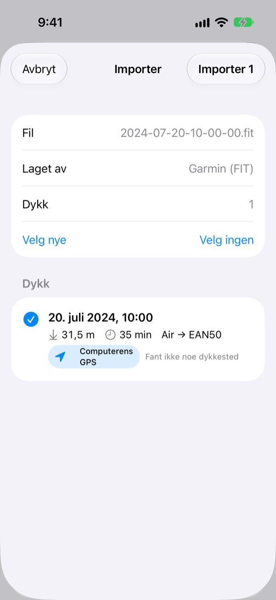
Last ned dykk fra computeren
Sett dykkecomputeren i Bluetooth-modus først. På en Shearwater: Menu → Bluetooth. Den blir der i omtrent to minutter. Bare dykk som er nyere enn forrige nedlasting, hentes.
| Oppgave | iPhone og iPad | Mac |
|---|---|---|
| Åpne | Loggbok → Last ned dykk | Fil → Last ned fra dykkecomputer… (⇧⌘D) |
| Koble til | Bluetooth. Velg computeren din under I nærheten; første gang skriver du inn PIN-koden som vises på skjermen dens. | Velg Bluetooth eller USB-kabel. For kabel velger du computerens modell og port, og følger Før du begynner. |
| Fullfør | Fjern haken for dykk du ikke vil ha, og velg Behold. Dykk uten hake blir liggende på computeren og tilbys igjen neste gang. | Last ned. |
Klokkespørsmålet. Første nedlasting fra hver computer spør Hvilken sone er klokken på computeren stilt til? De fleste computere registrerer lokal tid uten tidssone, så dette holder dykketidene dine riktige når du reiser. Svaret huskes for den computeren.
Når du har valgt dykk, kan du gå gjennom dem ett for ett for å angi dykkested og gasser, eller velge Fullfør senere: de venter under Må bekreftes.
Slettet et dykk og vil ha det tilbake? Slå på Last ned alle dykkene på computeren. Det tar lengre tid; dykk som allerede er i loggboken din, hoppes over.

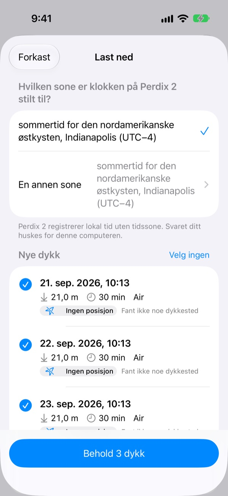
Shearwater Predator og Petrel 1
Disse bruker eldre Bluetooth (Bluetooth Classic) som iPhone og iPad ikke kan bruke. På Macen parer du først computeren i Systeminnstillinger → Bluetooth, og velger så USB-kabel i nedlastingsvinduet: porten kan dukke opp i listen. Sett computeren i Bluetooth-opplastingsmodus og velg Last ned. Dette er ennå ikke prøvd på en ekte Predator eller Petrel 1, så send nedlastingsloggen enten det virker eller ikke. På iPhone importerer du heller dykkene deres fra Shearwater Cloud eller en UDDF-fil.
Støttede computere
Thermocline laster ned med libdivecomputer, biblioteket med åpen kildekode som mange loggbøker deler. Det kjenner flere hundre modeller fra de fleste produsenter. For å se din åpner du nedlastingsskjermen og velger Støttede computere; for hver av dem står det om den virker på iPhone og iPad eller trenger Macen.
| Tilkobling | Hvor den virker | Prøvd så langt |
|---|---|---|
| Bluetooth LE | iPhone, iPad og Mac | Shearwater Perdix og Perdix 2. Andre modeller skal virke: si fra til oss. |
| USB- eller seriellkabel | Bare Mac | Bygget, ennå ikke prøvd på ekte maskinvare. |
| Bluetooth Classic (Predator, Petrel 1 og andre eldre modeller) | Bare Mac, paret som seriellport (slik gjør du) | Ennå ikke prøvd. |
| Garmin Descent (.fit-filer) | Import på iPhone, iPad og Mac (slik gjør du) | Descent-dykk, også driftdykk. |
Har du en computer vi ikke har prøvd? Hjelp oss å teste den.
Bekreft dykkested og gasser
Dykk som fortsatt mangler dykkested eller bekreftede gasser, venter under Må bekreftes. Ingenting hindrer dem i å bli lagret; fyll dem ut når det passer deg.
| Oppgave | iPhone og iPad | Mac |
|---|---|---|
| Finn dem | Øverst i Loggbok, under Må bekreftes. | Gå → Må bekreftes (⌘2) |
| Bekreft | Åpne ett, velg så Velg et dykkested og trykk på Ja, disse gassene er riktige (eller Korriger gass…). | Banneret på hvert dykk tilbyr Bekreft dykkested og gasser…, Velg dykkested… eller Bekreft gasser…. |
Thermocline foreslår dykkestedet ut fra dykkets posisjon: dine egne dykkesteder først, deretter de innebygde listene med over 76 000 dykkesteder og vrak, som virker uten nett.

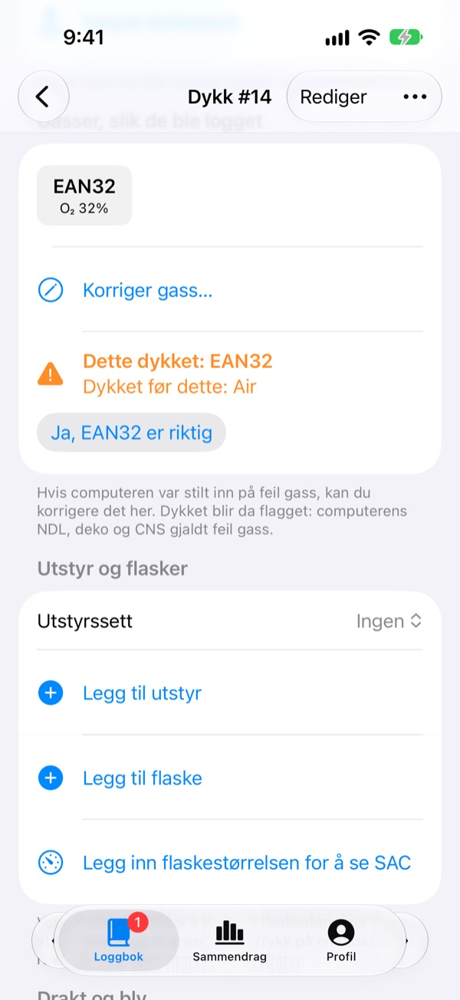
Les et dykk
| Oppgave | iPhone og iPad | Mac |
|---|---|---|
| Les av et hvilket som helst øyeblikk | Dra over grafen. | Pek på grafen. |
| Logg et dykk for hånd | Loggbok → Logg for hånd | ⌘N |
- Sikkerhetsverdier ligger i en fast stripe øverst på hvert dykk, alltid på samme sted.
- Profilen: brikker under grafen viser eller skjuler Flaske, ppO₂, NDL, SAC, Temp., CNS og Oppstigning, som Stablet striper eller Lagt over i én graf. Bare det dykket registrerte, får en brikke. NDL er computerens egen og stopper under deko, der det røde båndet viser stoppene. På en smal iPhone blir brikkene på én linje og kan rulles sidelengs. Prøv det på forsiden.
- Rebreathere: fra en hvilken som helst computer eller fil som registrerer dem, viser ppO₂-stripen setpoint sammen med voted ppO₂ (og hver celle, der det er registrert), og avlesningen gir setpoint i det øyeblikket. Et bytte fra diluent til en hvilken som helst annen gass merkes som bailout.
- Gassforbruk: trykk eller klikk på Hvordan? ved siden av SAC-tallet for å se alle verdiene: flasken, vannvolumet, trykkene, temperaturen og realgasskorreksjonen.
- Redigering: du kan redigere hvilket som helst dykk. En rettelse beholder computerens opprinnelige avlesning.
- Bly: første trykk på + setter Uten bly, for et dykk uten bly. Trykk på − derfra for å fjerne det.
- Lenker i notater: nettlenker i notatene til et dykk kan trykkes eller klikkes på. Når du er ferdig med å skrive, trykker du på Ferdig over tastaturet: lenkene vises da, og en YouTube- eller Vimeo-lenke får en knapp, Legg til … i videolenker, under notatene. For å skrive i notatene igjen velger du Rediger notater.


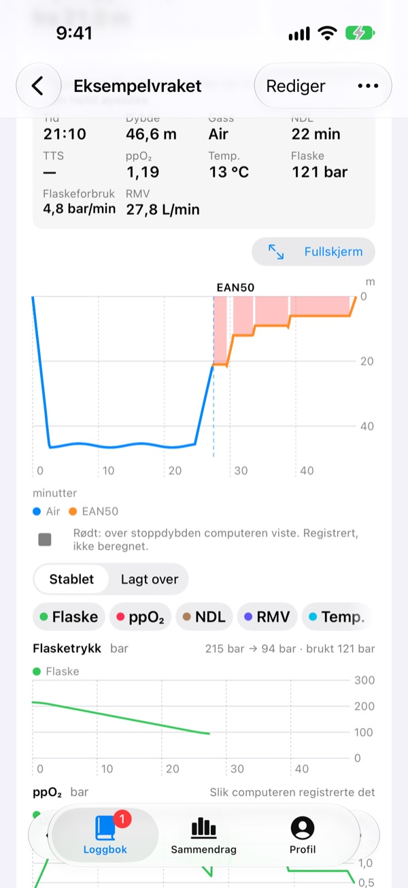

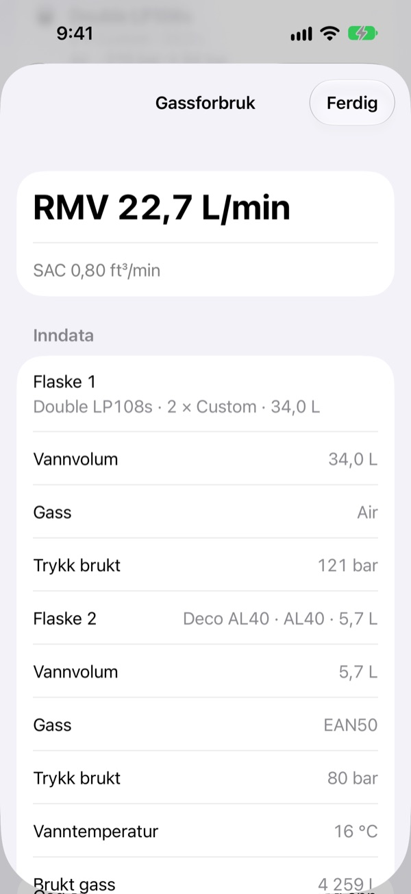

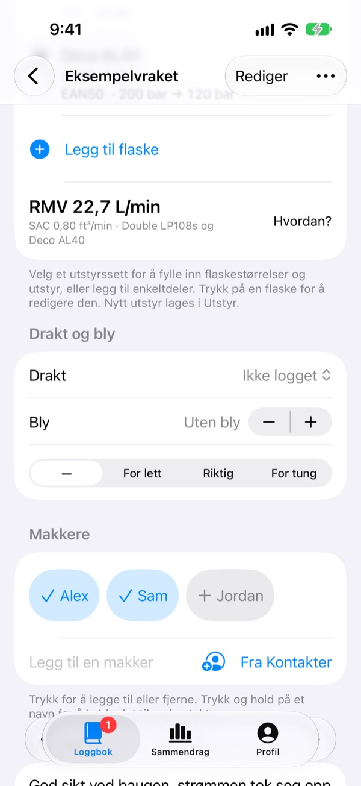

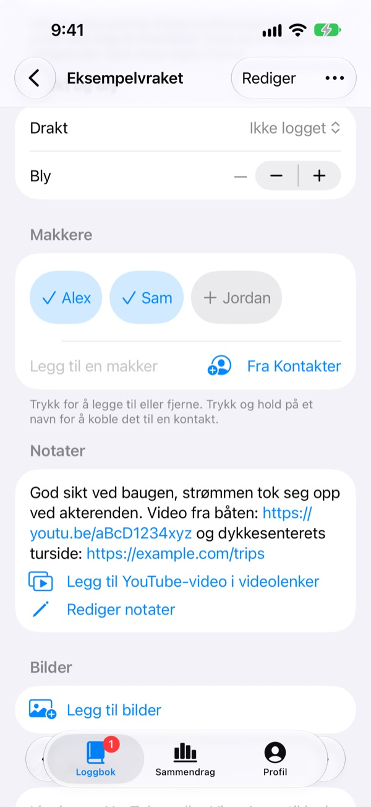

Dykkesteder, posisjoner og Apple Watch
| Oppgave | iPhone og iPad | Mac |
|---|---|---|
| Legg til et dykkested | Profil → Dykkesteder, deretter legg til-knappen: Finn eller navngi et dykkested eller Marker posisjonen her (GPS). | Gå → Dykkesteder (⌘4), deretter Legg til dykkested… |
| Se alle dykkesteder i listene | Profil → Dykkesteder → Kart, deretter globusknappen, eller knip sammen til kartet er helt utzoomet. Vrak er oransje, rev og dykkesteder blå, dine egne dykkesteder røde flagg. | Dykkesteder, deretter Vis globus i verktøylinjen, eller zoom helt ut. |
| Finn en posisjon | Et dykkested uten posisjon tilbyr Finn posisjon: sjekk forslaget på kartet, skriv inn koordinater eller slipp en nål. | Finn posisjoner… går gjennom alle dykkesteder uten posisjon, ett om gangen. |
Apple Watch: marker en posisjon på overflaten, så venter den på iPhonen din under Må bekreftes. Se Apple Watch.
Posisjonene til dykkestedene er for logging, ikke for navigasjon.

Apple Watch
Klokkeappen gjør én ting: den markerer hvor du er på overflaten, så det er lett å logge dykkestedet for et dykk. Den registrerer ikke dykk; de kommer fra dykkecomputeren din. Den trenger watchOS 11 eller nyere og en iPhone med Thermocline.
| Oppgave | Apple Watch | iPhone |
|---|---|---|
| Installer | Den følger med iPhone-appen. Hvis den ikke er på klokken, åpner du Watch-appen på iPhonen, finner Thermocline under Tilgjengelige apper og trykker på Installer. Første gang tillater du stedstilgang for Thermocline på klokken. | |
| Marker en posisjon | På overflaten, over dykkestedet, åpner du Thermocline. Vent på God fix, og trykk så på Marker posisjon. Klokken prikker deg på håndleddet når den er lagret. | Posisjonen kommer av seg selv. Hvis iPhonen er utenfor rekkevidde, sendes den når de er sammen igjen. |
| Navngi den | Valgfritt. Trykk på Legg til et navn etter markeringen, eller senere i Markeringer, og si, skriv for hånd eller tast det inn, for eksempel «baugen på vraket». Det lagres når du er ferdig. | Navnet foreslås som navnet på det nye dykkestedet. Du kan bruke det eller velge et annet dykkested. |
| Bekreft den | Ingenting å gjøre på klokken. | Loggbok → Må bekreftes. iPhonen slår opp posisjonen når den er på nett, foreslår nærmeste kjente dykkested og viser dykket den mest sannsynlig hører til. Bekreft eller forkast den. |
| Sjekk at den ble sendt | Markeringer viser hver av dem med Sendt til iPhone eller Venter på å sendes til iPhone, og et kart. En posisjon forsvinner fra klokken når den er bekreftet eller forkastet på iPhonen. | Når den er bekreftet, synkroniseres dykkestedet til de andre enhetene dine som alle andre. |

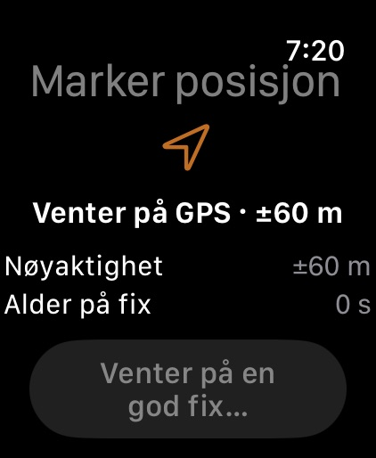

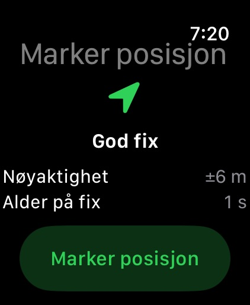

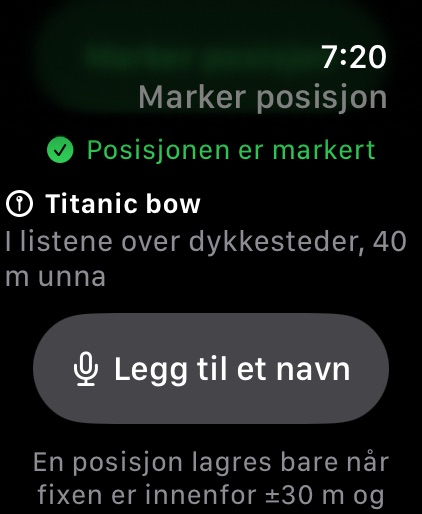

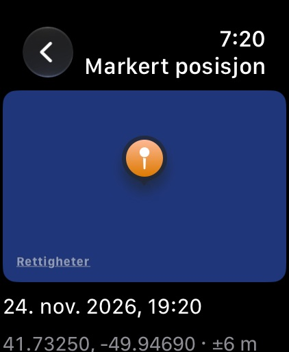
Klokken lagrer en posisjon bare fra en fix innenfor ±30 m og under 30 sekunder gammel, og den ser bort fra en gammel bufret posisjon. Marker den på overflaten, ikke under vann.
Posisjonene til dykkestedene er for logging, ikke for navigasjon.
Utstyr og flasker
| Oppgave | iPhone og iPad | Mac |
|---|---|---|
| Åpne Utstyr | Profil → Utstyr | Gå → Utstyr |
- På en flaske åpner Modell flaskekatalogen: søk etter produsent eller modell (for eksempel «PST LP104») for å fylle inn de oppgitte størrelsene, eller skriv inn dine egne tall.
- Kryss av for Dobbelsett (sammenkoblet par) for et dobbelsett.
- En stålflaske stemplet med +: slå på Plussmerking så lenge siste trykktest beholdt +. Den vises for eksempel som 2400+. Denne bryteren vises når flaskestørrelser vises i kubikkfot.
- Flaskene på hvert dykk ligger under gassdelen for dykket (Legg til flaske, Utstyrssett).
Slå sammen og skjøt dykk
- Slå sammen er for ett dykk registrert av to computere. Begge opptakene beholdes, og du kan bytte mellom dem i grafen.
- Skjøt sammen er for ett dykk som ble delt i to av en kort tur til overflaten.
- Thermocline gjør aldri noen av delene på egen hånd. Når den finner et sannsynlig par, tilbyr et banner øverst i loggboken å gå gjennom dem.
| Oppgave | iPhone og iPad | Mac |
|---|---|---|
| Gjør det selv | Trykk på Velg, velg to dykk, og deretter Slå sammen eller Skjøt sammen. | Velg to dykk og høyreklikk: Slå sammen disse dykkene… eller Skjøt sammen disse dykkene… |
| Ombestemt deg | Angre med en gang, eller Skill disse dykkene på dykket når som helst. | |
Bilder og videolenker
- Legg til bilder på et dykk kopierer dem fra biblioteket ditt inn i loggboken.
- For å spare iCloud-plass slår du på Synkronisering → Spar iCloud-lagring på dykkebilder på alle enhetene. Bildene blir da koblet til iCloud Bilder i stedet for kopiert, og videoer fra biblioteket ditt kan legges til. Thermocline ber om tilgang til Bilder bare når du slår dette på.
- Videolenker: lim inn en YouTube- eller Vimeo-lenke under bildene til et dykk. Bare lenken lagres. En lenke som allerede er i notatene, kan legges til derfra (se Les et dykk).
- Den samme videoen på flere dykk: velg dykkene (på iPhone trykker du på Velg først), velg Rediger … dykk…, og legg til lenken under Videolenker. Den legges til på alle valgte dykk, og lenker de allerede har, beholdes.
Sammendrag og pust
Fanen Sammendrag (Sammendrag i sidepanelet på Macen) teller opp loggboken din: dykk per år og per måned, dybder, gasser, rekorder, hvor du dykker, og det dykkestedet og den makkeren du bruker mest. Velg en periode øverst, for eksempel ett år, og trykk på et hvilket som helst tall eller stolpe for å se dykkene bak.
- Pust viser SAC og RMV over alle dykk i perioden som har flaskestørrelse og start- og sluttrykk, vektet etter tid og dybde. Trykk på det for å se hvilke dykk som ble telt med.
- Noen importerte dykk har ingen flaskestørrelse, så Pust kan være tom i starten (se Hvilken MacDive-fil du skal bruke). Angi flaskene på dykkene dine, i Utstyr eller på hvert dykk, så fylles den inn.

Synkroniser med iCloud
| Oppgave | iPhone og iPad | Mac |
|---|---|---|
| Slå på synkronisering | Profil → Synkronisering | Thermocline → Innstillinger → Synkronisering |
Alle enheter som er logget på den samme Apple-kontoen, deler da én loggbok, lagret i din egen private iCloud. Endringer som gjøres uten nett, venter på enheten og sendes når den er på nett igjen.
Synkronisering-delen viser statusen, alt som Venter på å sende, og om denne enheten og de andre enhetene dine stemmer overens. Synkroniser nå sjekker med en gang.

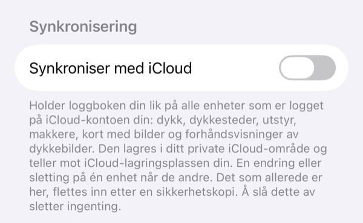
Eksport, gjenopprettingspunkter og tømming
| Oppgave | iPhone og iPad | Mac |
|---|---|---|
| Eksporter | Profil → Dataene dine | Fil-menyen |
| Gjenopprettingspunkter | Profil → Dataene dine → Gjenopprettingspunkter | Innstillinger → Dataene dine → Gjenopprettingspunkter |
- Eksport: UDDF er den komplette eksporten og din vei ut til hvilken som helst loggbok. Også tilgjengelig: et regneark (CSV), MacDive XML, bokmerker for grotteoppmåling (CSV) og et erfaringssammendrag (tekst) for forkunnskapskrav til kurs.
- Gjenopprettingspunkter: et lagres før synkronisering slås på, før en stor import, en sammenslåing, en skjøting, en tømming og før noe slettes. Gjenoppretting lagrer først den nåværende loggboken din som et gjenopprettingspunkt, så du kan angre det.
- Tømming: Tøm loggboken… tilbyr å eksportere først. Med synkronisering på følger de andre enhetene dine etter.

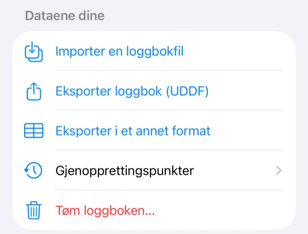
Står du fortsatt fast?
Se Feilsøking, eller send tilbakemelding fra TestFlight eller til brian@616labs.net.